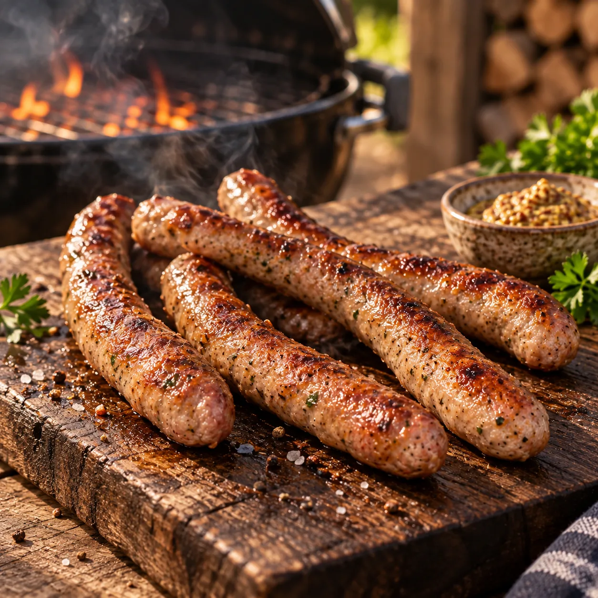

Unsere Klassiker · Grill & BBQ
Bratwurst selbst gemacht
Saftig, würzig und mit Petersilie, Chili und einer feinen Zitrusnote

Eine grobe, saftige Bratwurst mit frischen Kräutern und leichter Schärfe. Die Petersilie bringt eine frische Würze mit und passt wunderbar zur feinen Zitronen- und Limettennote.
Zutaten
750 gSchweinefleisch aus der Schulter
250 gBacon
1 BundPetersilie
2Chilischoten
1Knoblauchzehe
1Bio-Limette
1Bio-Zitrone
1 PriseRohrzucker
1 TLSalz
Nach GeschmackSchwarzer Pfeffer
Ca. 3 mWurstdarm
Das brauchst du
1Fleischwolf
1Wurstfüllaufsatz oder Wurstfüller
1Verschließbarer Grill
Zubereitung
- Schweinefleisch und Bacon in wolfgerechte Würfel schneiden und bis zur weiteren Verarbeitung gut kalt stellen. Die Petersilie samt feinen Stielen grob hacken.
- Die Chilischoten entkernen und in Ringe schneiden. Den Knoblauch fein hacken. Von Limette und Zitrone die Schale fein abreiben.
- Fleisch, Bacon, Petersilie, Chili, Knoblauch und Zitrusabrieb mit Rohrzucker, Salz und Pfeffer gründlich vermengen. Die gut gekühlte Masse durch den Fleischwolf drehen.
- Den Wurstdarm nach Packungsangabe vorbereiten und vorsichtig mit der Fleischmasse füllen. Nicht zu stramm arbeiten, damit sich die Würste noch abdrehen lassen. Etwa alle 20 cm den Darm abdrücken und jeweils eine Wurst abdrehen.
- Den Grill für direkte und indirekte Hitze vorbereiten. Die Bratwürste zunächst bei geschlossenem Deckel über einer Tropfschale im indirekten Bereich garen, bis sie leicht Farbe angenommen haben.
- Zum Schluss über direkter Hitze von beiden Seiten kurz goldbraun grillen. Dabei nur so lange bräunen, dass die Würste saftig bleiben.